Phylogeny and evolution¶
Speciation¶
Speciation is the evolutionary process by which reproductively isolated biological populations evolve to become distinct species. Two populations from the same species that are reproductively isolated, that do not have gene flow between them, can end up with time creating two new species incapable of having sexual reproduction between them.
Speciation mechanisms¶
A population is a group of individuals that live in the same greographical area and are capable of interbreeding mixing their genetic information.
Individuals will interbreed more usually with other individuals from their same populations than from individuls from other populations. Selection, genetic drift, mutation and migration will affect in different ways to different populations and therefore different populations will have different genetic characteristics. Allelic frequencies will differ between populations.
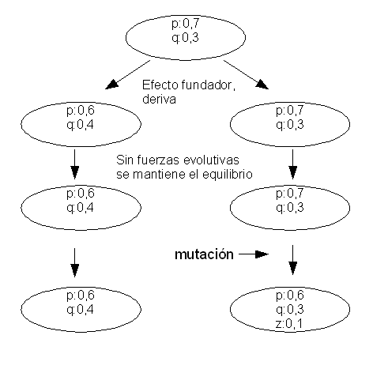A species is usually composed by different populations which have different characteristics. The species is maintained integrated by the genetic flow that goes from one population to another. If the genetic flow is low the populations will tend to differ with time. Different selective pressures acting in different populations will also make them became different. If the isolation between the populations is maintained they will create races, subpopulations and finally species.
The isolation between different populations can be due to different causes. One common cause is the geographical isolation. The populations are split because of the geography (mountain ranges or rivers for example) or by distance (like South and North America). The speciation cause by this reason is called alopatric.
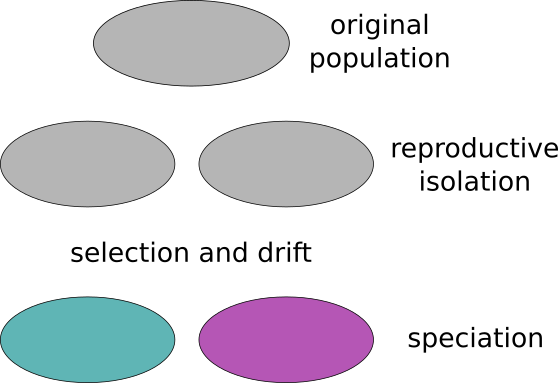A sympatric speciation happens when the isolation between the species happens despite living in the same geographical region. These could be different reasons for a sympatric speciation like:
Habitat or seasonal isolation. One species can reach the sexual maturation in a different species than other or might inhabit different ecological niches.
Sexual or behavioral isolation. Both species have a sexual incompatible behavior.
Mechanical isolation. The reproductive organs are not compatible any more.
Postzigotic isolation. The zygote is formed but is not viable due to genetic or other causes. It might also be possible that the hybrid is viable, but it is sterile.
Microevolutive processes¶
Microevolution is the change in allele frequencies that occurs over time within a population.
The processes that underlie microevolution are: mutation, selection (natural and artificial), gene flow and genetic drift.
Mutation¶
Genetic variability is the pre-requisite for evolution. The other microevolutive processes will act upon the variability created by the mutation.
The mutations are:
random and non-directional towards a goal.
They create variation. Mutation is the only process that creates new variation.
Types:
Point mutations, nucleotide substitutions.
Small insertion and deletions
Structural variants
Causes:
Spontaneous
replication errors
DNA repair errors
mutagens
Genetic drift¶
Genetic drift is the change in the allelic frequencies due to the random sampling of alleles to create a new generation. There wouldn’t be any genetic drift in an infinite population.
You can simulate the random drift.
Try simulate what happens when you create smaller and larger populations. Simulate what happens with different starting allele frequencies.
Characteristics:
It removes variability
It is neutral
Mechanism that controls most of the genetic variation
Selection¶
Selection is due to the differential reproductive success of different genotypes.
Selection removes variation created by mutation. It could be compared with a sculptor that removes fragments from a stone to create a statue.
Mutations can be with respect to selection:
beneficial
deletereous
neutral
The fitness is the quantitative representation of the selection, it measures the contribution of an individual to the genetic pool of the next generation.
It has no sense to think on the fitness without taking into account the environment. One trait could be beneficial in one environment and deletereous in another.
Selection adapts the species to the environment and improves the fitness overtime.
Species¶
Variation within and between species¶
There could be genetic variation within and between species. When the genetic variation is dominated by the intraspecific variation it is advisable to do genetic population analyses and not phylogeny.
Phylogeny assumes that the variation within species compared with the variation between the species is negligible.
Species concept¶
A species can be defined as the group of individuals capable of breeding and have fertile offspring. This standard definition focuses on the genetic flow because the lack of genetic flow will make populations differentiate over time creating new species. But there are different problems with this definition:
The capacity of breeding fertile offspring ranges from impossible to completely compatible in a continuos variation. Where should we trace the line that split the species.
If two groups can potentially breed but they live in different continents do they belong to the same species?
It does not account for the amount of morphological, physiological and ecological differences. What happens if we have two distinct groups that do not breed because of a geographical barrier and that are ecologically very distinct? Even if they could potentially breed are they different species?
If the species has asexual reproduction, how does the gene flow definition applies?
If the species had sexual reproduction but we only have fossils how can we determine if two individuals belong to the same species?
If we study a species that has derived from an extant old species when shold we split the two species?
Trees and networks¶
Phylogenetic analyses assume that species evolve into new species and that there is no gene flow between those species once they have split. There can be some exceptions to this assumptions:
Very close species can have gene flow between those because they can still produce fertile hybrids.
There is horizontal transfer. Some genes can jump from one species to another without being transmitted by sexual interbreeding. This is specially the case in bacteria.
When there is gene flow between species the evolution is better represented by a network than by a tree.
These networks a typical of the populations that after they are split they can still have gene flow between them. In this case we could consider using population genetic analyses instead of phylogenetics.
A clear case of a network is the endosymbiosis of the mitocondria and the chloroplast. In this case the genes will have bifurcating trees, but the species evolution will be a network.
Introduction to phylogeny¶
Phylogenetic analyses try to infer the evolutive relationships between species. They try to build the correct topology, the order of splits in the ancestral species that created the extant species, and the genetic distances, that are related to the time passed since the splits.
The phylogenetic methods usually assume that the extant species analyzed were created by splits of the ancestral species in a bifurcating fashion. If this assumption is not met the result of the phylogenetic analysis might be misleading. For instance, if we are analyzing populations within a species there could be gene flow due to migration and that won’t be reflected in the tree build by the phylogenetic analysis.
Phylogenetic analyses create the phylogenetic trees using the experimental evidences available. Some kinds of evidences are:
Morphological data
Genotypes
DNA or protein sequences
Taxonomy vs phylogeny¶
Taxonomy) is the science of defining groups, classifying, on the bases of similarity and shared characteristics. Phylogenetics is the study of the evolutionary history of the living beings. Both concepts are related, but they are not the same. In biology, Cladistics, we try to classify the species using their evolutionary history. We could create the biological groups based on characteristics not related with its history. We could classify according to morphological or ecological similarities not because of their history. For instance, herpetology is the study of amphibians and reptiles, despite the fact that cladistics would classify them in distinct groups. Some methodologies traditionally used in phylogenetics, like UPGMA trees, are also commonly used in taxonomy, even in non-biological taxonomies.
Nomenclature¶
Taxon and clade¶
A taxon is a group of organisms defined in a taxonomical analysis. The taxa can be families, genera, species, etc. Examples of taxa are: mammals, reptiles, insects or fishes.
A clade is a branch in a phylogenetic tree. It can be a group of species with their common ancestors.
All clades could be taxa, if somebody name them, but not all taxa can be clades. Only the monophyletic taxa are clades. For instance, the vertebrates are a taxon and a clade. But the taxa reptiles and fishes are not clades.
Monophyly, polyphyly and paraphyly¶
A monophyletic group is a taxon which forms a clade, meaning that it consists of an ancestral species and all its descendants.
A polyphyletic taxon is comprised by branches that do not originated from a common ancestor. For instance, worms would be a polyphyletic taxon.
In a paraphyletic taxon all their members originated from a common ancestor, but not all the descendants of that ancestor are included in the taxon. Reptiles or fishes are examples of paraphyletic taxa.
Trees, dendograms and cladogram¶
A phylogenetic tree is a representation of the inferred evolutive relationships, the phylogeny, of a group of clades. If you follow the diagram from one species in the tip to the ancestor species you will follow the evolutionary history of the species.
Phylogenetic trees depict two kinds of information, the topology, the pattern of the branching, and the length of the branches. The topology is related with the order in which the species split in the evolutionary history and the branches with the time or amount of change between the species.
A a phylogram is a phylogenetic tree in which the branch length should be taken into account.
| -------------- A
| |--|
| | --------- B
| |
| -------------------------C
By contrast, in a cladogram only the topology is relevant.
In an ultrametic tree of the branches from the common ancestor to the extant species have the same length.
| ----------- A
| |--|
| | ----------- B
| |
| -------------- C
If all genetic distances were proportional to the time since the split of the species all phylogenetic trees would be ultrametric, but this is seldom the case. This is known as the molecular clock hypothesis. Usually some branches evolve at a faster or slower pace. Some possible reasons for these changes are: selection or genetic drift. For instance, small populations will change faster due to drift and species in new ecological niches will suffer a stronger selection pressure and will change faster.
Equivalent topologies¶
We can create alternative, but equivalent, graphical representations of a tree. We have to be cautious when judging which trees have different topologies because we can have different representation of the same underlying tree.
| --------- A
| ------|
| | --------- B
| |
| | --------C
| --------|
| --------D
|
| --------- B
| ------|
| | --------- A
| |
| | --------C
| --------|
| --------D
|
| --------- B
| ------|
| | --------- A
| |
| | --------D
| --------|
| --------C
Rooted and unrooted trees¶
A phylogenetic tree can be represented with or without a root. In a rooted tree the there is a node that corresponds to the common ancestor of all the leaves of the tree. In this case all nodes represent the most recent common ancestor of the clade that derived from that ancestor.
| --------- A
| ------|
| | --------- B
| |
| ----------------C
| --------- A
| ------|
| | --------- B
| --|
| |
| ----------------C
|
| --------- A
| ------|
| | --------- B
| |
| |
| ----------------C
Phylogenetic reconstruction methods do not create rooted trees. We have to determine which is the ancestor node. We could do it by assuming the molecular clock hypothesis In this case the most distant node of the extant nodes will be the most ancient one. The problem with this approach is that we can not be sure that the molecular clock hypothesis is true for all phylogenies.
So the most common way of creating rooted trees is to include some taxon in the phylogenetic reconstruction that we are sure that is the most distant and unrelated one. For instance, if we would root a tree of the mammals we could use a crocodile.
Polytomy¶
A polytomy is a unresolved node in which several branches appear.
| --------------- A
| |
| |--|-------------- B
| | |
| | ----------------C
| |
| -----------D
The phylogenetic reconstruction methods assume that all splits are in two, so all polytomies would be due to lacking phylogenetic signal or to lacking reconstruction methods. To solve a polytomy we need evidence that correspond to mutations that appeared in the period in which the species related to the polytomy split.
Phylogenetic inference based on sequences¶
Phylogenies can be inferred using different kinds of evidence like:
Morphology
Molecular markers
Presence and absence of genes.
DNA or protein sequences
But the most common approach is to use sequences when they are available.
In any case we need characters that are similar because they have a common ancestor, not the characters that are similar because they were selected to adapt the organisms to a similar ecosystem niche. For instance, if we consider dolphins and sharks to be closely related because they share a similar shape we would be mistaken. The problem lies in the character chosen. We evaluate the phylogenetic relationships taking into account the similarities in some characters. If those similarities are due to a common ancestor, for instance we have for limbs like the cats because we have a common ancestors. Those characters that are similar because they originated from a common ancestor are called homologous characters. The characters that are similar, but not because they have a common ancestor are said to be analogous.
For morphological characters can be difficult to know if a character is similar between two species because it is homologous or analogous because selection can create analogous structures in organism that face the same ecological problems. For the sequences this is seldom the case. Two sequences that are similar are similar in most of the cases because they are homologous. The molecular function is not so directly tied with the sequence. Different sequences can have the same function, so it is unlikely that selection creates molecules with the same sequence, even if it creates sequences with the same function.
When we are using sequences to build a species tree we assume:
Each sequence is correct and it belongs to the organism that we are studying.
Sequences are homologous, they evolved from a common ancestor.
Each position in the multiple sequence alignment is homologous in all sequences.
All sequences correspond to extant species and no extant species originated another extant species. All extant species will be leaves in the tree.
Mutations happened at random
Different positions evolved independently.
There is no genetic flow between the different species after their split. Evolutionary history is a tree, not a network.
The sequences used can have enough phylogentic signal to infer the phylogeny in every detail, but that can be not true. We have to check using some statistical method which features of the phylogeny are statistically significant and which are not.
Usually when we interpret a species phylogeny we assume that the sequence variation within species is very small compared with the variation between species. This won’t be true for populations.
Uses¶
Phylogenies can be used to study the species evolution or the evolution of genes.
One common use case is to use sequences of extant species to infer their evolutionary history.
Evolutionary history can be studied for the broad taxonomic ranks or within species. We can be interested in build a tree for all metazooans of just for the HIV viruses.
We can also use phylogenies to study the evolution of genes and their functions in different organims.
Species tree vs gene tree¶
The phylogenetic history of the species and the genes of those species should be the same in general, but there might be differences. Sometimes we can find genes that have a different history than the species that host them.
When we are building a species tree we assume that the sequences used are representative of the species evolution.
When we are studying very close species it is common to have incomplete lineage sorting.
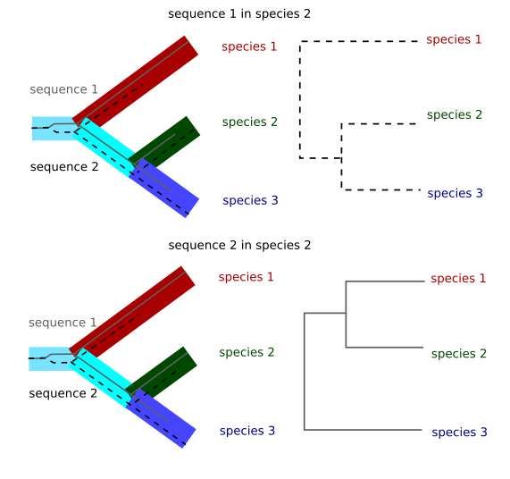Imagine that you have two alleles for one gene in one ancestral species. Those alleles will have differences between them. If we sequence only one allele from the extant species and this allele is chosen at random in those species the final tree will depend on the alleles chosen for each species. This case is only relevant in very close species because if the species are different enough the number of mutations since the split from the original species will be much larger than the differences between the two original alleles and those differences will be irrelevant for the phylogenetic reconstruction. This case is, for instance, relevant in the tree of chimpanzee, gorilla and human. Depending on the region of the genome chosen the gorilla might appear to be closer to human than the chimpanzee.
Another common phenomenon that differentiates the species and the gene tree is horizontal transfer. Usually genes move from parents to offspring, but in some cases they can move horizontally from one species to another. This is common, for instance, within transposable elements. One example is the case of the mariner element. The transposable element mariner has been transfered between insect and mammal species and there are insect and mammalian sequence with identities higher than 95%.
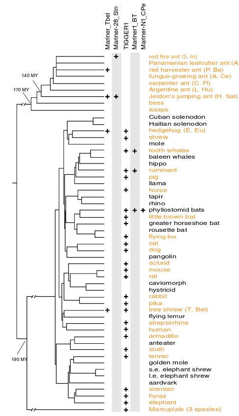In the figure it is show the location of different subfamilies of the mariner element: Mariner_TbeI, Mariner-28_sln, Mariner1_BT and Mariner-N1-CPe. Mariner_TbeI is found in the Tree shrew and in a couple of ant species.
Horizontal gene transfer is also very common in prokaryotes.
Another case in which there are discrepancies between the species tree and the gene trees is when species interchange genetic material. This can happen when species are very closely related and they still produce fertile offspring. Another case happened when the eukariotes evolved from a fusion of an archea and a bacteria.
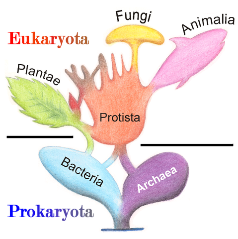You also have to take into account that when there is genetic interchange between species recombination might happen and you can end up having sequences that have stretches that have had different evolutionary histories. Phylogenetic methods assume that there is no recombination.
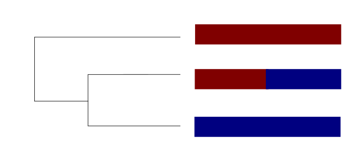Nowadays it is common to build thousands of gene trees from many genes of the genome and infer the species tree from those trees. This is the area of phylogenomics.
Gene families¶
A gene family is a set of similar genes created by ancestral duplications.
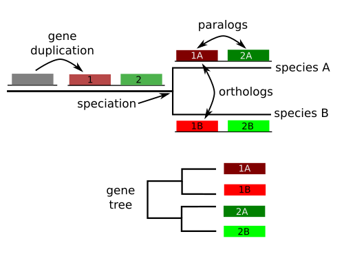All genes that originated from the ancestral copy are homologous , but we can further classify them:
Homologous sequences are orthologous if they are inferred to be descended from the same ancestral sequence separated by a speciation event
Homologous sequences are paralogous if they were created by a duplication event within the genome.
Homologs resulting from horizontal gene transfer between two organisms are termed xenologs.
Multiple alignment as evidence for phylogenetic inference¶
Phylogenetic trees are usually build from multiple sequence alignments.
We asume that aligned positions for each sequence correspond to homologous positions and the the differences are due to mutation that occurred along the evolutionary history.
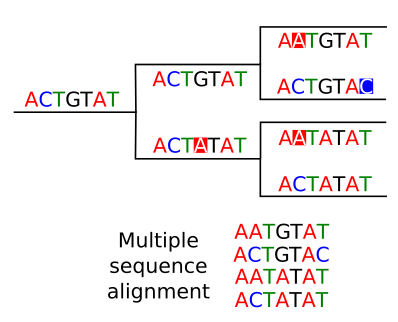The higher the quality of the multiple sequence alignment the better will be our phylogenetic reconstruction. If we suspect that there are misaligned regions it is better to remove them before doing the phylogenetic analysis. We can check manually the multiple sequence alignment to remove suspicious regions. In general the regions that accumulate more mutations will be more difficult to align and more prone to misalignments.
This pruning of misaligned regions can also be done automatically with specialized software like Gblocks or TrimAl. These programs remove regions according to its level of conservation, number of gaps, etc.
Models of nucleotide substitutions¶
Sequences accumulate mutations with time, so differences between homologous sequences inform us about the evolutionary distance and the time since those sequences begun their split. The more different two sequences are, the more time should have passed since their split, but there are several confounding factors for this simple assumption.
Mutations vs observed changes¶
We could think that counting the number of differences between two sequences we are counting the number of mutations between them, but that is not the case. The several mutations can occurred at the same position and we would count just one difference or maybe even none if the mutation reverted the sequence to the original sequence. This problem has to be corrected if we want to account for the real number of mutations.
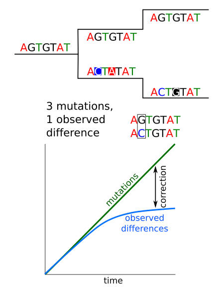Transitions vs transversions¶
A transition is a change of one purine nucleotide by another one: A to G or G to A or a pirimidine nucleotide by another one: C to G or G to C. So a transition is a change of one nucleotide by another chemically similar. A transversion is a change of purine by a pirimidine or viceversa.
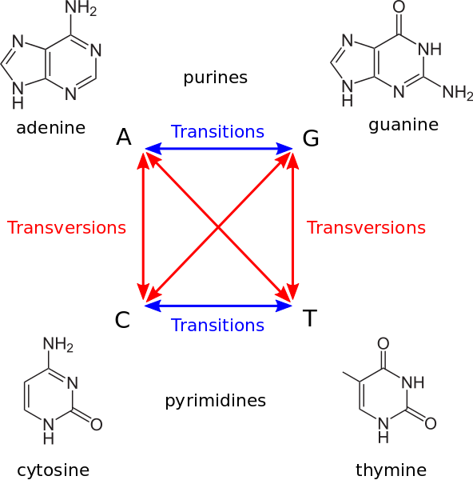Transitions and transversions do not occur with the same frequency, transitions are more likely. Substituting a ring structure for another single ring structure of the same type is more likely than mutations between different rings. Also, transitions are less likely to result in amino acid substitutions (due to wobble base pair), and are therefore more likely to persist as “silent substitutions” So, if we are interested in accounting for the time since the split of one species it would be better to count transversions ans transitions independently because they accumulate at a different rate.
Models of nucleotide substitution¶
The models of nucleotide substitution account for the process in which one sequence is changed into another. These models account for the relative frequencies of the different possible changes. They correct for as many confounding factors as possible to account for the true time since the split of the species.
These models usually assume that different positions in the sequence alignment evolved independently. This is true for sites evolving neutrally and it could be not true for some selective pressures.
These models differ in the assumptions that they made:
All mutations are equally probable or not.
All sites evolve at the same rate or not.
All nucleotides are found at the same frequency or not.
Popular substitutions models¶
The Jukes and Cantor model is the simplest substitution model. It assumes that all mutations are equally probable, that all nucleotides are found at the same frequency and that all sites evolve at the same rate. In this model there is only one parameter, the substitution rate at which the mutations occur.
The kimura model distinguishes between the substitution rate for transitions and transversions. It assumes that all bases are found at the same frequency and that all sites evolve at the same rate.
There is a generalised time reversible model that allows for different mutation rates between all nucleotides and different frequencies for the nucleotides.
There are also models that assume different mutation rates for different positions in the alignment. This account for sites that are more conserved than others due to selection.
Choosing between models¶
The best model for our phylogeny depends on the sequences that we are using.
The evolution of different sequences can be best modeled by one substitution model than other. For instance, if there are sites strongly selected and sites that are neutral it might be better to use a model that allows for different mutation rates across positions.
There is also another factor to take into account. The phylogenetic signal contained in the sequence alignment that we are using is limited and the more parameters a model has the more signal we need if we don’t want to overfit the model. An overfitted model would describe our data by adjusting the noise in it as if it was the reality.
Thus, the model to use would be the model that best fit our data, but taking into account the amount of phylogenetic signal to avoid overfitting. So the model will depend on the sequence alignment and it has been shown that the model choice might influence the result of the phylogeny.
There are different programs to calculate which is the model for our data. They create a rough first tree and from that they try all the models and check how the fit the data. One of such programs jmodeltest.
Methods of phylogenetic reconstruction¶
We can divide the methods in:
heuristic methods based on distances
Maximum parsimony methods
Maximum likelihood
Bayesian
Phylogenetic reconstruction based on distances¶
Genetic distance¶
The genetic distance is a measure of the degree of difference between to sequences.
There are different statistical measures to calculate the distance between two sequences. In theory we could just use the number of differences between sequences divided by the length of the alignment, but as we have seen we have to account for the number of mutations not for the number of differences. Many sites will have had several mutations and by counting the number of differences we are underestimating the genetic distance. So, we have to use a method to estimate the genetic distance that uses a nucleotide substitution model.
If we have several sequences aligned we can calculate the distances between any pair of them. These will be the pairwise distances and with them we can calculate a matrix.
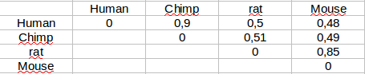Tree generation from distance matrices¶
There are several methods to generate trees from a pairwise distance matrix. They are general statistical methods used in different fields, not just in phylogenetics. They might be used for any problem that involve creating hierarchical classifications. The most common of these methods in phylogenetics are UPGMA and Neighbor-joining.
These heuristic methods are very fast. They can be used with huge distance matrices and they do not depend directly on the sequence length because all they take is the pairwise genetic distance and they do not consider the alignment per se. They run very fast without much memory.
We can generate a tree from any distance matrix, but not all distance matrices are equally well described by a tree. Some matrices, for instance, might be better described by networks than by trees.
Once we have generated a tree it is advisable to check how well the tree matches the original distance matrix. One way of doing that is to calculate a cophenetic correlation index. To do it we calculate a new distance matrix from the tree and we calculate the original distance matrix with the new matrix generated from the tree. A high correlation would indicate that the tree is a good representation of the original matrix.
UPGMA¶
UPGMA is a clustering method based on looking for the most similar pairs. One the most similar pair is found the distance matrix is recalculated with this pair as an entity.
This method will generate ultrametric trees so it is advisable to use it only if we are sure that the molecular clock hypothesis is a good match for our data.
Neighbor-joining¶
Neighbor joining is very commonly used because is fast and it has no restriction regarding the molecular clock. It will generate non ultrametic trees with branches that span different lengths.
Maximum parsimony¶
The maximum parsimony approach tries to obtain the tree that requires the least number of changes to explain the character matrix given, e.g. the multiple sequence alignment. The idea behind it is that the simplest explanation should be the correct one.
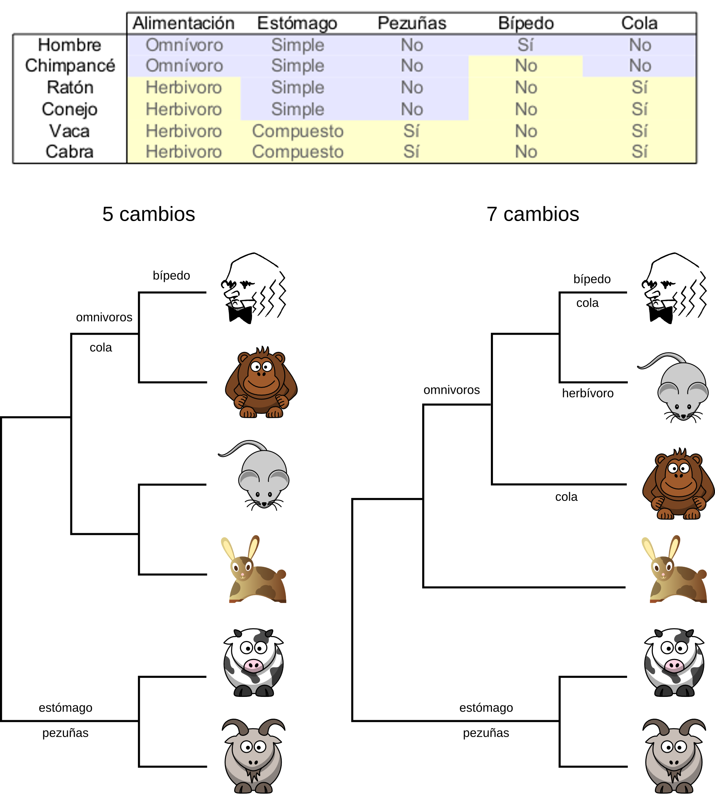To chose the most parsimonious tree the method should, in theory, evaluate all possible trees. For each tree should calculate how many mutations need to account for the given character matrix. After having that information it should chose the trees with the least number of mutation. It could be one tree or several that have the same number of mutations.
In practice it is not possible to evaluate all trees because the number of trees grow very fast with the number of taxa. Only with few taxa would it be possible to check them all. So the parsimony methods use a heuristic to chose the most likely trees and to evaluate the number of mutations only on those.
For the purpose of a maximum parsimony analysis not all characters are informative.
A aat tcg ctt cta gga atc tgc cta atc ctg
B ... ..a ..g ... .t. ... ... t.. ... ..a
C ... ..a ..c ... ... ..t ... ... ... t.a
D ... ..a ..a ... ..g ..t ... t.t ..t t..
1 2 3 4 5
Position 1 is not informative for parsimony because it is invariant and it would add zero mutations to any possible tree. So it won’t differentiate between trees.
Position 2 does change, but only in one sequence. It is not informative for parsimony because it would add one mutation for any possible tree. These characters are called autapomorhies.
Position 3 is to variable because it changes in all individuals and it will contribute with 3 mutations to any tree.
Other methods do use these non-informative sites for parsimony and they have an influence in the genetic distances that they calculate.
Positions 4 and 5 are informative for parsimony because they are shared by some species and not by others and they would contribute with different numbers of mutations to different trees. These positions are called synaptomorphies.
The maximum parsimony method was very popular in the past, but nowadays it seldom used because it has been shown that it has some statistical problems#Problems_with_maximum_parsimony_phylogeny_estimation). There are cases in which this method won’t give us the correct topology. Moreover, the more phylogenetic data that we have the worse it will behave in these cases. These problems arise, for instance, when we have a tree in which some taxa have evolved faster than other and the problem is called long branch attraction.
| ----A
| -----|
| | ----------------------------B
| |
| | --------------------------C
| -----|
| ----D
|
If we try to reconstruct this phylogeny using maximum parsimony it will create a tree in which the taxa B and C are together in the base of the tree.
Maximum likelihood¶
Maximum likelihood is not used just for phylogeny, it is a very useful concept with wide application.
likelihood¶
In common language probability and likelihood are used as synonymous, but they are not in technical language.
Imagine that we are throwing a coin 10 times. If we assume that there is a probability p of landing heads we can calculate the probability of observing a particular outcome, like having 5 heads and 5 tails or 6 heads and 4 tails and so on. So we have a process with some observed outcomes, than we can name as O and some parameters that influence those outcomes that we can call M (M for model). Thus we can calculate the probability of the outcome given the parameters is P(O|M).
In real life we usually don’t know the values for the parameters that define M. For instance, in the case of the coin we do not know the value for the probability of landing heads p. All we know is that we can do some observations, throwing the coin, and obtain some outcomes O. So we have to estimate M from our observations O. A natural way of estimating M is to find the parameters that maximize the probability of having observed O. So, we can define a function that has O as a given and has the parameters of M as variables. This is called the likelihood function, or just likelihood: L.
We can maximize L and in that way we calculate the parameters of the model that maximize the probability of having observed our data.
Example with a coin¶
We have a coin with a probability p of landing heads and 1 - p of landing tails. For a perfect coin p should be 0.5, but we want to check if our coin is perfect and we want to infer p from the observations that we have done.
We throw the coin n times and we get x heads and (n - x) tails. We want to calculate p from those observations.
The probability of having observed x heads and (n - x) tails is related to p by the following function:
P(x | p, n) = n! / (x! * (n-k)!) * p^x * (1 -p) ^(n - x)
We can maximize this function for the variable p and thus we can calculate which value of p gives the maximum likelihood of observing x. To do it we can derive the function and ask for the derivative to be zero and to the second derivative to be negative. If we do just that we get:
p = x/n
You can also read the full demonstration.
To this estimation of the value of p we call it maximum likelihood estimation.
Maximum likelihood and phylogeny¶
We can use the maximum likelihood approach to look for the most likelihood phylogenetic tree. This would be the tree that makes the data that we have observed more probable.
To do it we need some observation, the multiple alignment. We also have to chose beforehand the some mutation model that we want to assume.
For each possible tree we will calculate the probability of the data being generated by the different trees and we will chose the tree that makes the data most probable. For each tree it will also calculate the parameters of the model that makes the data most probable.
It is not possible to inspect every possible tree because the number of trees grows very fast with the number of taxa so these programs use heuristics to inspect only the most likely trees.
This method uses the phylogenetic information present in our data in a more efficient way than the distance based methods and the maximum parsimony method. So given an alignment it might generate a better tree than the other ones.
The main problem of the method compared with the distance based methods is that it is computationally more costly. We can use it now for moderately big alignments because the computers are now quite powerful.
Bayes¶
Bayesian statistics based in Bayes theorem. The theorem allows us to calculate conditional probabilities, the probability of an event A given that other event B has happened.
p(A|B) = p(A) * p(B|A) / p(B)
This theorem is the base of the bayesian inference. We calculate the probability of an hypothesis or model (M) given some observations (O).
p(model|observations) = p(model) * p(observations|model) / p(observations)
p(M|O) = p(M) * p(O|M) / p(O)
p(observations|model) is the probability that we used in the maximum likelihood approach. It was the probability of having those observations given the model and the parameters that we had assumed. The probability that we calculate in the bayesian approach is the probability of the model given the observations. The interpretations of this probability is more straightforward, it is just the probability of the model or hypothesis given the data that we have observed.
Example with a coin toss¶
In the movie The Dark Knight Harvey Dent before becoming Batman’s enemy Two-Face picks between different paths by tossing a coin. It tosses the coin several times in the movie and it always the result is heads, never tails. The question is: when are we allow to suspect that there is something funny with Dent’s coin?
We can think of two hypotheses: the coin is fair and has a head and a tail (H&T) or the coin just has just two heads (2H).
After Dent has tossed the coin for the first time we have 1 observation, one head, and we can calculate the probability of the coin having a head an a tail or just two heads using Bayes’ theorem.
P(2H|1 observation) = p(2H) * p(1 observation|2H) / p(1 observation)
P(H&T|1 observation) = p(H&T) * p(1 observation|H&T) / p(1 observation)
The probabilities of having observed 1 head in 1 toss are easy to calculate for both models:
p(1 observation | 2H) = 1
p(1 observation | H&T) = 0.5
p(2H) and p(H&T) are the probabilities of the models without taking into account the observation, the probabilities of the models prior to the observation, and they are called prior probabilities. These probabilities can not be calculated from the data available. We have to assume values for the prior probabilities that look reasonable to us. For instance, in this case we could assume that having a coin with two faces is very weird. Alternatively we could assume that since we are watching a movie based on a comic in which a character named two-head appears we might assume that p(2H) is quite high. We could also assume different prior probabilities and we could check what happens in any case.
Case 1: p(2C) = 0.0000000001
Case 2: p(2C) = 0.5
Finally, we have to calculate the probability ob ser observation independently of the models. That means, the probability of the observation under any model considered being true.
p(1 observation) = p(2H) * p(1observation|2H) + p(H&T) * p(1observation|H&T)
Given the prior probabilities we can calculate everything
p(2H|1observation) = p(2H) * p(1observation|2H) /(p(2H) * p(1observation|2H) + p(H&T) * p(1 observation|H&T))
Case 1 (p(2H)=1e-10): P(2H|1observation) = 2e-10
Case 2 (p(2H)=0.5): P(2H|1observation) = 0.6666666666666666
In both cases we have updated the probability of both hypotheses, but both posterior probabilities are very different. Posterior probabilities depend on our observation and on the prior probabilities.
What would happen if Havery Dent would continue tossing the coin and getting heads all the time? In that case the posterior probabilities would converge on very close posterior probabilities no matter what prior probabilities we start with. So, with enough observations posterior probabilities can be independent on the prior probabilities.
Epistemological implications of bayesian inference¶
We can think about bayesian inference as a way of learning. Every time we do an observation we update our prior knowledge (pior probabilities about the models and hypotheses) with the new evidence/observations and we get new knowledge (new posterior probabilites).
knowledge = prior knowledge + new evidence
Different evidences should update your knowledge in different degrees. Imagine that somebody tells you that is capable of curing your influenza infection by treating you with a magical sleight of hand. So he does the trick and you get cured after a couple of days. Would you think that the infection was cured by his magic? No, because you would had been cured anyway by your own means. Most influenza infections are cured even if no treatment is given. It would be a very different kind of evidence if you could treat 100 people with the magic sleight of hand and cured them in a mean time of one day while other 100 people untreated are cured in a mean time of 3 days. That would be a much stronger evidence because the treatment is doing something that we do not see in the people that was not treated.
This is reflected in bayesian inference in the power of the evidence. The power of an evidence depends on the probability of having observed the evidence if the hypothesis is true and on the probability of having observed the evidence even if the hypothesis is not true.
p(O|M) / p(O)
Imagine that we want to detect the expression of a gene and we design a pair of primers located in the first exon of a gene. We do an RNA extraction, we retrotranscribe and we do the PCR. We get the in an agarose gel the band that we were expecting. Could we conclude that the gene is being expressed? No. Why? Because that band could be due to a contamination of genomic DNA of the RNA. So the band would appear even if the gene is not expressed. To be sure that the gene is expressed we have to set proper controls in the experiment. For instance, we could carry out two experiment one treating with DNAase the RNA before doing the retrotranscription and another treating with RNAase. If in the RNAase case the band disappears and in the DNAase case the band is still there we might conclude that the expression is real. This evidence is difficult to explain if the gene is not expressed. To avoid these problems the primers used to detect gene expression are usually designed in different exons to use the intron in the middle to avoid the expression due to genomic DNA contamination.
Every time we do a PCR reaction we include a negative control to be sure that our band is not due to a contamination but to our samples. It is also a good idea to include a positive control to be able to interpret the case in which we get no band. Has the PCR reaction failed?
A doctor does an inmonulogical tuberculosis detection test to you. The result is positive. Are you infected with tuberculosis? Probably not. If the analysis is well done they have detected antibodies in you. That suggests that you have had contact with the bacteria at some point, but not necessary that you are infected now. This test would be just a preliminar evidence, but to reach a solid conclusion we would have to do other analyses.
Prior probabilities affect our conclusions and should be taken into account.
You participate in a program to evaluate the prevalence of HIV in the standard population. The doctor informs you that the test for HIV presence was positive in your case. Are you infected? The doctor explains to you that the false positive rate of the test is 5%. That means that for every 100 analysis in non-infected people 5 turn out to be positive. Which is the probability that you are really infected? No, it is not 95% and you can not calculate that probability unless you know the prevalence of the HIV infection in your population (the prevalence). This is the base rate. Let’s assume that in your population 2 out of 100 people are infected. Imagine that we do 1000 analyses to 1000 different people. How many analyses will be positive and how many negative?
True positives = 1000 * 2 / 100 = 20 people
False positives = 1000 * (100 - 2) / 100 * 0.05 = 49 people
If we do not have any other evidence and we take into account the base rate (as we should) we have to conclude that even after being a positive in the HIV detection analysis it is easier not to be infected than to be infected. This is know as the false positive paradox and it has implications in very different fields like health or antiterrorist prevention. This is one of the motive why there are no widespread campaigns to detect some medical conditions in the population at large. The health, physiological and monetary costs of the false positives should be taken into account. We have a tendency of forgetting about the base rates and prior probabilities. This is a logical fallacy named as base rate fallacy.
Extraordinary claims¶
If in our research we reach an extraordinary conclusion, one far fetch result given the prior knowledge we have to provide also extraordinary evidences to back it up.
“Extraordinary claims require extraordinary evidence.” Carl Sagan
The case of Barry Marshall provides an example of an extraordinary claim back up by extraordinary evidences. He is a doctor that infected himself with Helicobacter pylori to show that, despite previous knowledge, this bacterium could case the peptic ulcer. If H. pylori was not capable of causing the ulcer he would not get peptic ulcer, but he did develop peptic ulcer one week after being infected. After the onset of the disease we was treated with antibiotics capable of killing H. pylori. After taking them he was cured. This evidence did also baked up the claim that H. pylori could cause a peptic ulcer despite the previous knowledge. After that first test clinical tests were set up to check if the peptic ulcer could be cured with antibiotics and they also backed up the hypothesis. So the conclusion was clear: H. pylori was capable of causing peptic ulcers. Marshall proposed an extraordinary hypothesis and provided extraordinary evidence to back it up and he was given the Nobel price for its contribution to medicine.
Prior probabilities criticisms¶
The main criticism to bayesian inference is directed against the evaluation of the prior probabilities. This evaluation is somewhat subjective. Two researchers can propose different prior probabilities for the same hypotheses because the judge different prior evidence in a different way. But trying to ignore the problem by not using prior probabilities in an explicit way just sweeps the problem under the carpet. The alternative of not using the previous knowledge is not to use it, to start always to the start of the research. We have to be aware of the dependence of the scientific inquiry on our previous knowledge. We have to make an effort of evaluating that previous knowledge as rigorously as possible. Besides, we have to be explicit about why we have considered some previous studies and not others. It is reasonable that even after this effort differences of opinion regarding the previous knowledge might remain between different researchers, but at least the reasons for these disagreements would be public and explicit.
Besides, even if the prior probabilities are not agreed upon we can reach an agreement after taking into account the new evidences. With time, as new evidences are accumulated and agreed upon the different prior points of view will converge. To have an efficient research system we have to make an effort of being aware of our prior knowledge and biases and we have to evaluate the new evidences independently of our interests and prior ideas. If we ignore the evidence that contradict our hypotheses and use only the ones that favor us we won’t reach knowledge but opinion.
Bayesian methods in phylogeny¶
In the case of bayesian phylogenetic inferece given the data that we have observed, usually a set of sequences, and some a priori probabilities, we calculate the posterior probabilities for all the possible trees and for all the parameters of the mutations models. The mutation model should be chosen before doing the analyses.
In this method we should evaluate the posterior probabilities for every parameter of every tree. This is computationally impossible for almost any phylogenetic problem. The alternative used is to use Markov chains Monte Carlo (MCMC) methods to sample the parameters and trees. The problem with the MCMC methods is that this chains tend to get stuck in local minima. To solve it the MCMC Metropolis-coupled algorithm is used (MCMCMC).
The most common software in bayesian phylogenetics is MrBayes.
This is the phylogenetic method that is more expensive computationally, but it is regarded as the one that best extracts the phylogenetic information located in a set of observations (usually sequences).
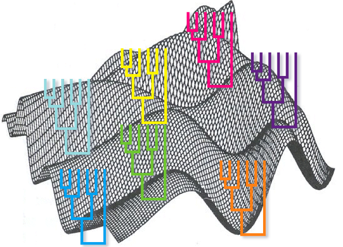Phylogenetic tree statistical validation¶
A tree is of not much use if we do not evaluate its statistical significance. A phylogenetic algorithm will always create a phylogenetic tree regardless of the data that we feed it, but that do not imply that the tree is meaningful. We have to evaluate what nodes of a tree can be believe, according to the evidence that we have, and which were generated at random.
In the bayesian methods every node of every tree has a posterior probability associated that we can use to evaluate their confidence, but in the other methods we do not have any direct indication of the reliability of the nodes.
An ideal way to evaluate the reliability of the tree would be to create different trees using independent evidences, for instance sequences from different genes. After building one tree for every gene we could compare which clades are shared by every tree and which are not. The ones shared would be more reliable. The problem with this method is that required different sets of data (although this problem has been alleviated in the genomic era).
A way of generating different alternative trees from one dataset is to do boostrapping. We can do boostraping using any phylogenetic reconstruction method: distance, maximum parsimony and maximum likelihood. The method consists of generating different multiple sequences alignments by replacing columns in the original alignment. For each replica some columns are chosen at random to be replaced and they are replaced by copying other columns. It is a replacement that keeps the number of columns in the alignment invariant. After creating these new alignments we calculate one tree for each of them using the phylogenetic method that we prefer. Finally, we count the number of times in which every clade appears in the boostraped trees and we use that measure as our reliability measure. The clades with high bootstrap values are to be trusted if the assumptions used to construct the tree are true.
There have been a lot of discussion and no consensus about which would be a good threshold to trust a node. It is clear that a clade with a 95% support it is more reliable than a clade with a 50% support, but the intermediate cases are more difficult to evaluate. It is quite common to use 70% as a threshold.
Phylogenetic software¶
There are different programs to do phylogenies: MEGA, phyml, MrBayes, RAxML and others.

{kind=link}
{kind=link}
{kind=link}
{kind=link}
{kind=link}
{kind=link}
{kind=link}
{kind=link}
{kind=link}
{kind=link}
{kind=link}
{kind=link}
{kind=link}